Baseline Data: Savings
Updated 26 July, 2015
overall savings
How much savings do you currently have? Please include all savings and money set away in formal accounts, informal accounts, money saved in your name in Dhaka or your place of origin. 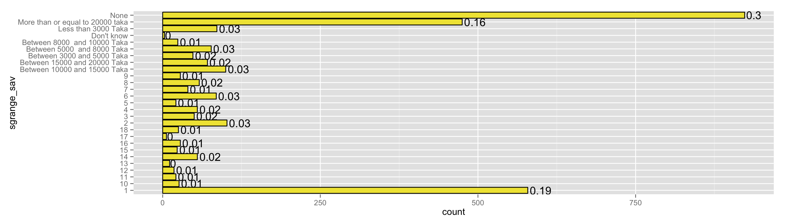
Please enter exact amount of all savings set away in formal accounts, informal accounts, money saved in your name in Dhaka or your place of origin.
| Statistic | sgam_sav |
| N | 3,038 |
| Mean | 12,372.020 |
| St. Dev. | 32,306.590 |
| Min | 0 |
| Max | 500,000 |
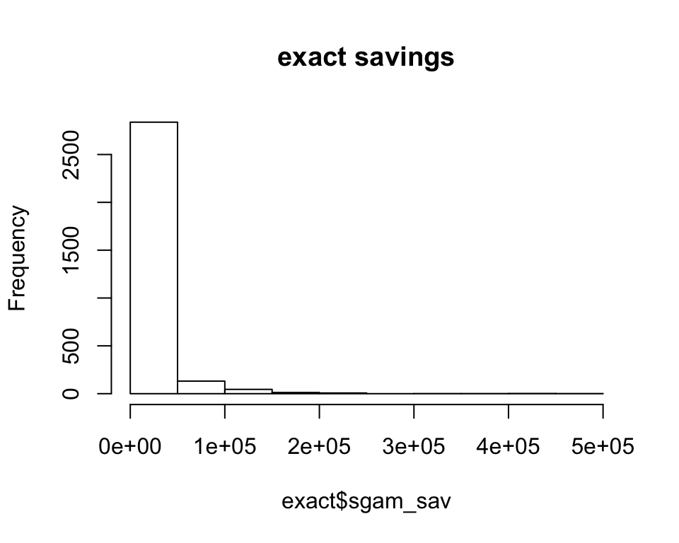
How much savings does your spouse currently have? Please include all savings and money set away in formal accounts, informal accounts, money saved in your spouse’s name in Dhaka or your place of origin. 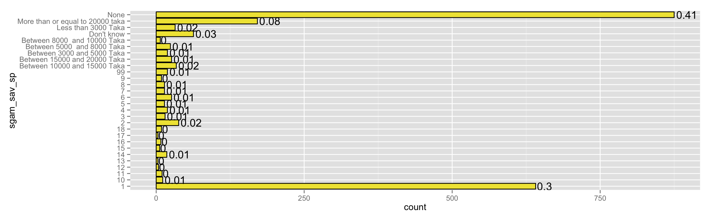
savings goals
Did you start working in the garment industry with the goal to save or set aside a specific amount of money? 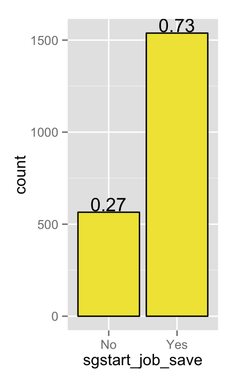
How much money did you plan to set aside or save (~550 NAs)? 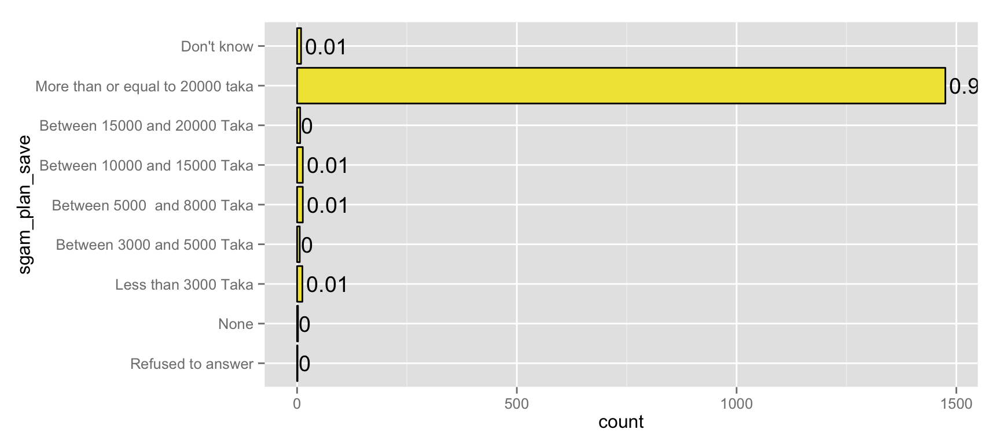
10-step ladder
Where on the ladder do you find yourself in relation to that savings goal. Step 1 is really far from the goal. Step 10 is reached the goal(~550 NAs): 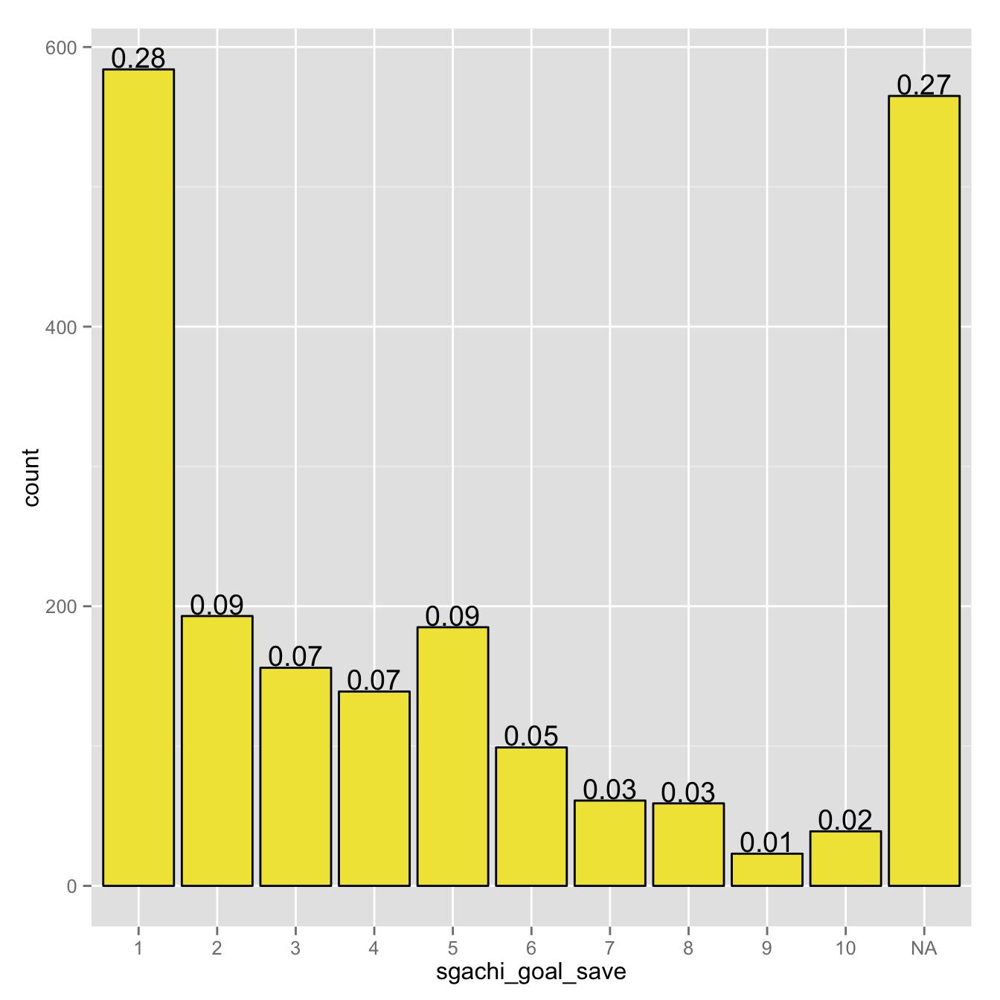
To what extent do you and your spouse agree on the amount you save and invest? Step 1 is disagree completely. Step 10 is agree completely(~700 NAs): 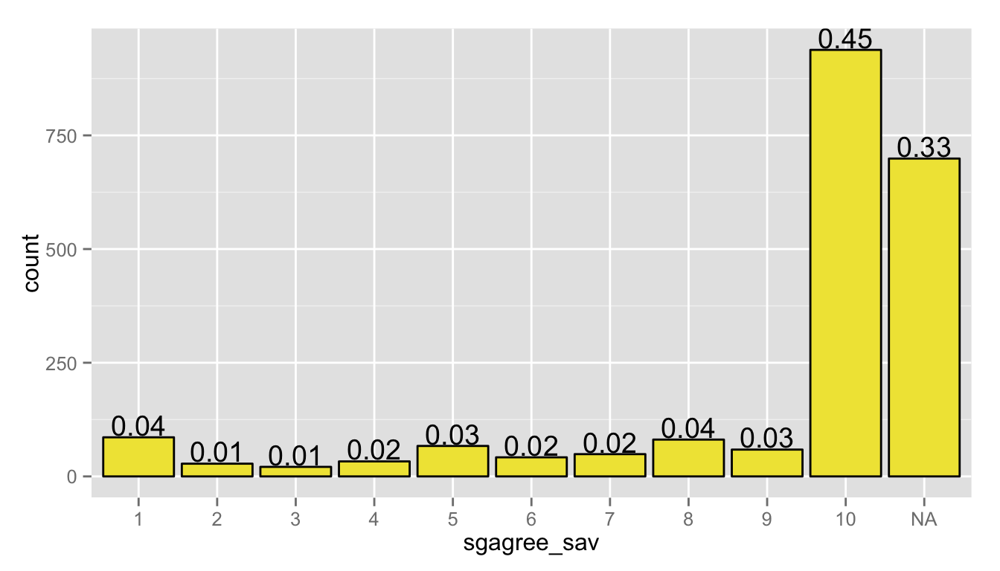
habits
Do you try to save or set aside a certain fraction of your wage every month? 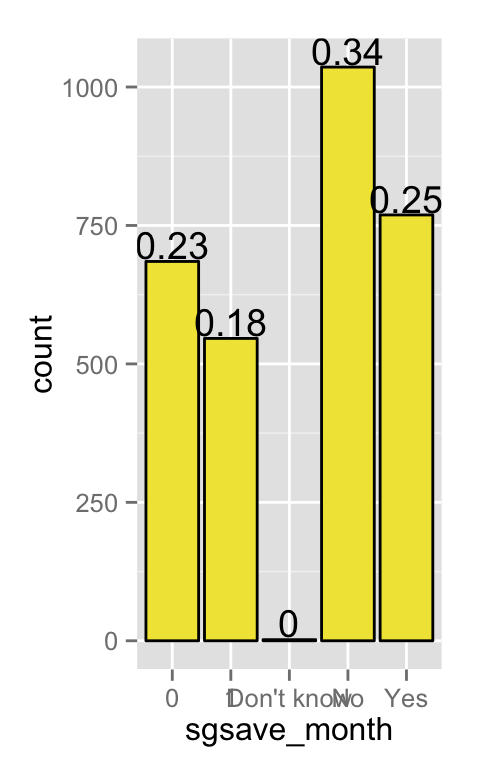
How much do you anticipate saving across all vehicles in the next 12 months?

#messy
#"sgsave_goals1" "sgsave_goals2" "sgsave_goals3" "sgsave_goals4" "goal_type1" concrete goals
What is top goal (~650 NAs)?
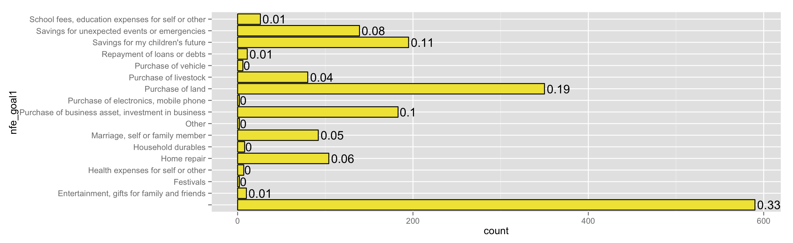
How much does will it cost (~650 NAs)? 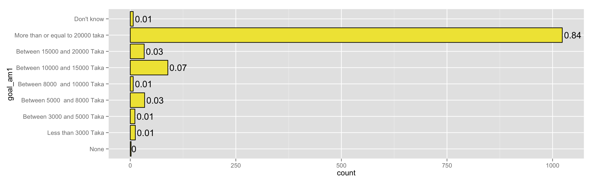
How are you planning to save (~650 NAs)?
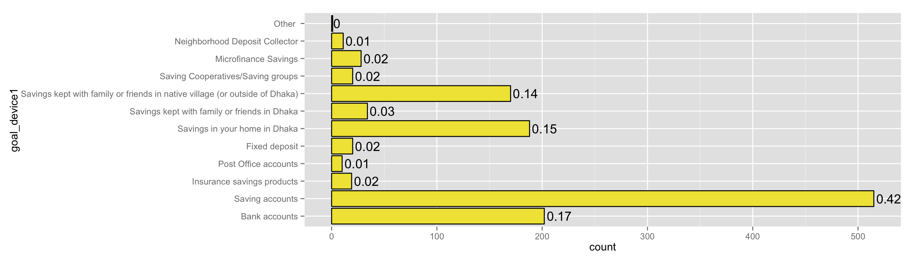
formal savings
Do you have savings set aside in any of the following accounts (or jointly in your name and somebody else’s name) (~1450 NAs)
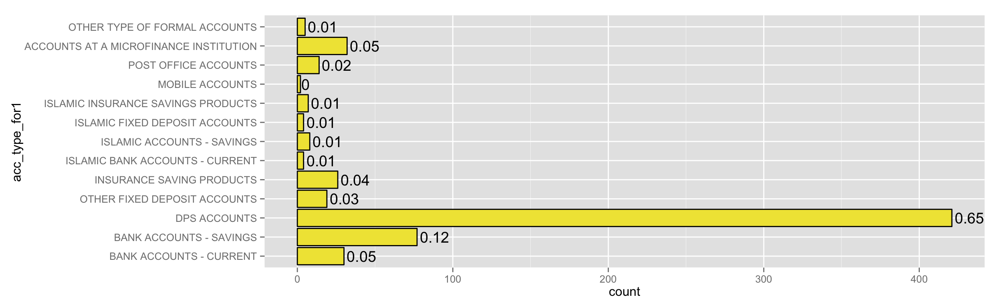
How many do you to your name (~1500 NAs)? 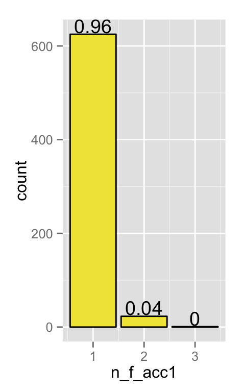
What is your current balance across all accounts of this type (~1500 NAs)? 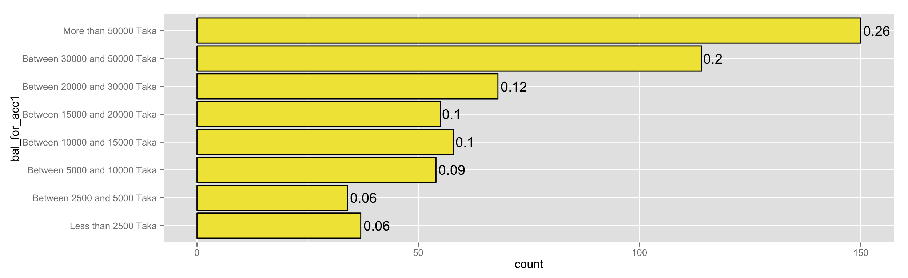
On average how often do you deposit or withdraw money from any account of this type (~1500 NAs)? 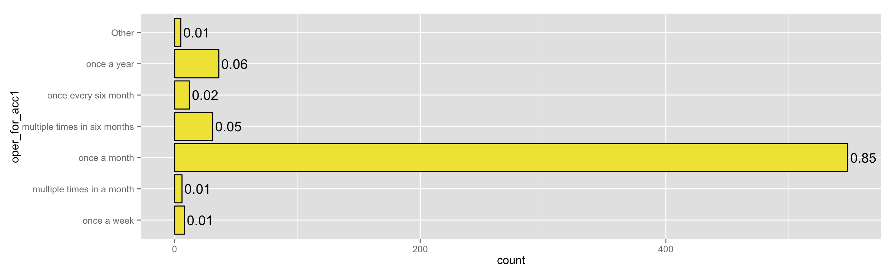
spouse
Is this money available to your spouse as well as you? (i.e. is the formal account joint? Does the spouse have access to the funds?
##
## Refused to answer No Yes Don't know
## 0 350 29 1
## <NA>
## 2658Does your spouse have an account of this type aside from those accounts you already mentioned?
##
## Refused to answer No Yes Don't know
## 0 339 36 5
## <NA>
## 2658What is the reason for not having a bank account in your name (~1650 NAs)? 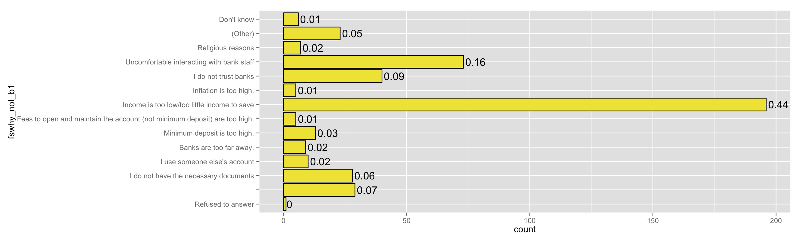
informal savings
Since you don’t have a bank account, what is the most common way for you to make a transaction (~1550 NAs)? 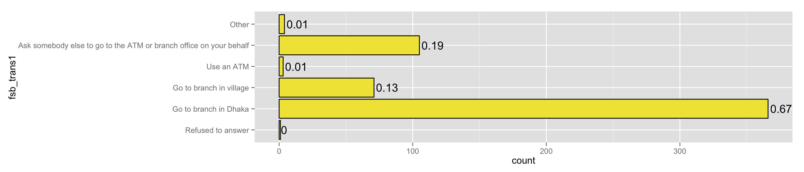
In general do you use the following methods for saving? 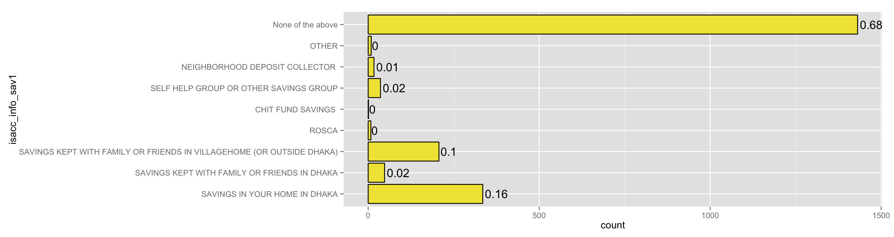
If you needed to save 5000 Taka for a large expense over the next 6 months would you be able to do it? 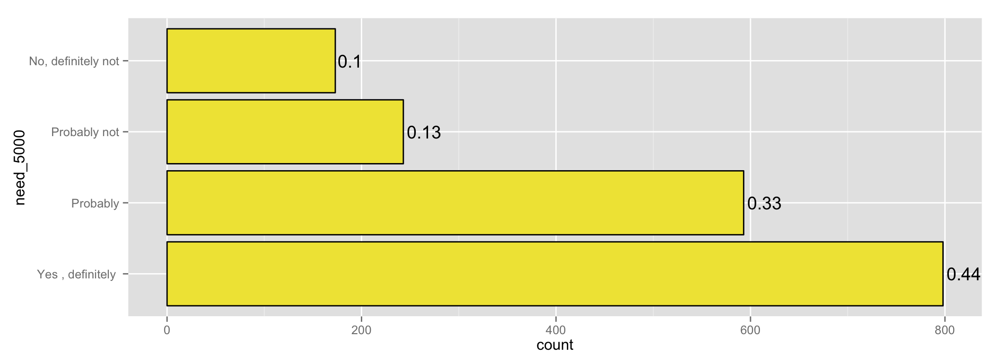
Imagine that you had 3000 taka left over at the end of the month, and wanted to save it, without spending it, for 3 months. Would you be able to? 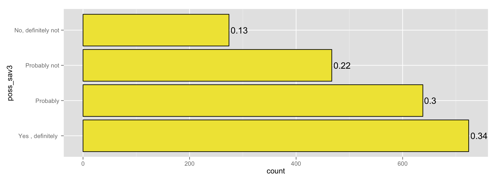